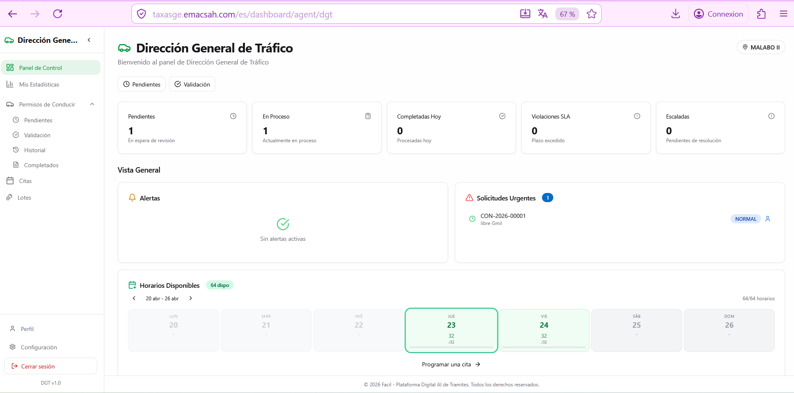
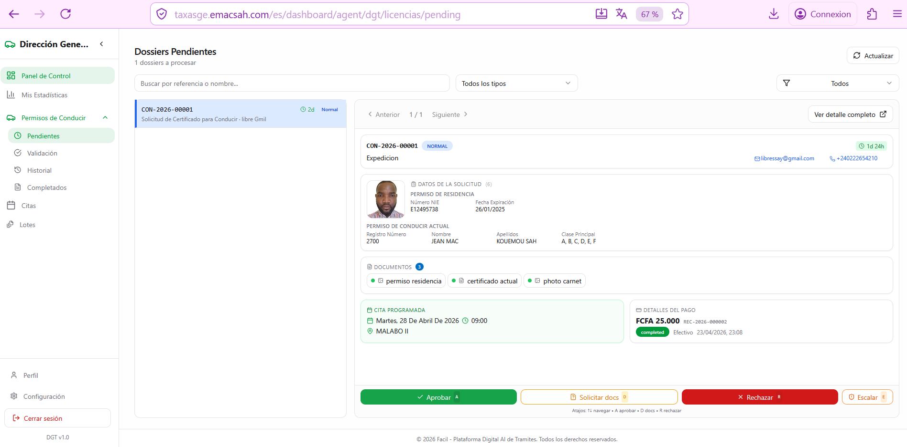
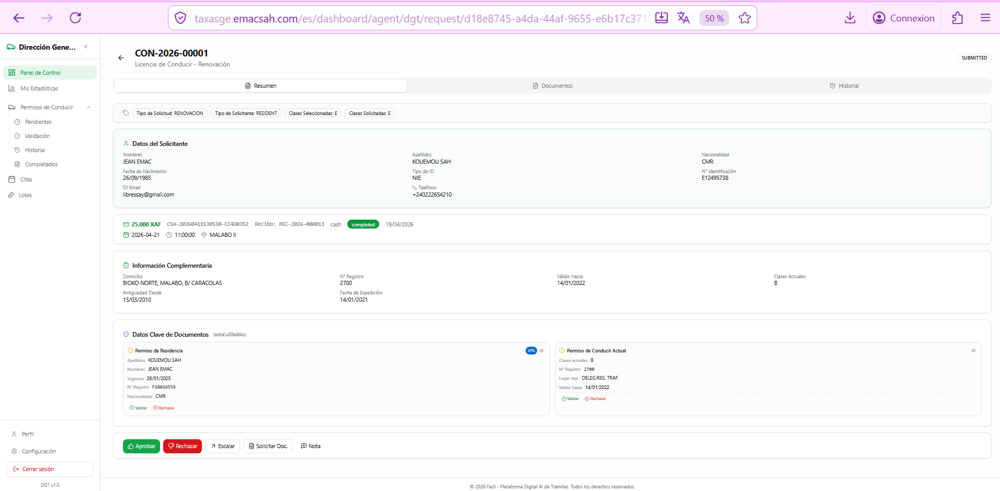
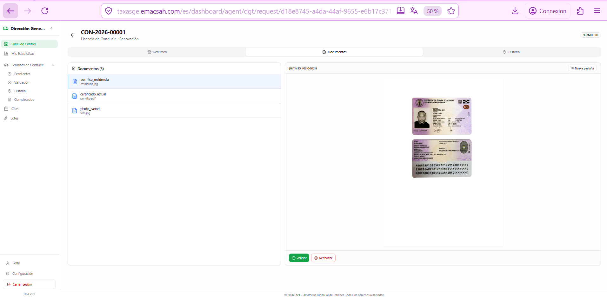
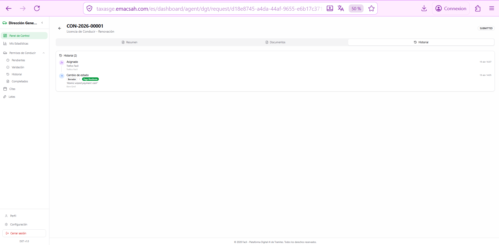
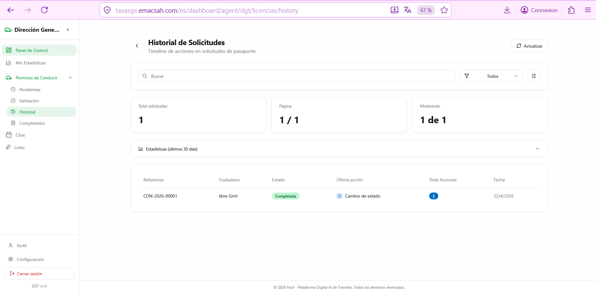
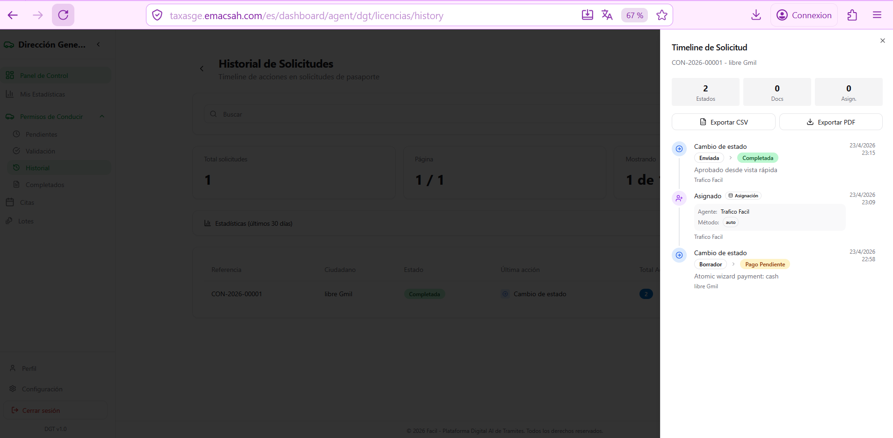
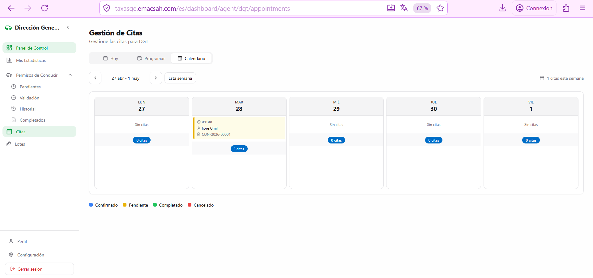
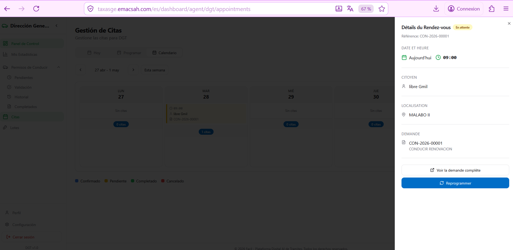

Agente DGT: validación de permisos de conducir
Los agentes de la Dirección General de Tráfico (DGT) tratan los permisos de conducir: expedición primera vez, renovación, duplicados, conversión de permisos extranjeros. Trabajan con un calendario de citas para los exámenes prácticos y emiten el carnet definitivo tras validación. Esta página describe la pantalla concreta de un agente DGT con capturas reales del back-office.
1. Dashboard del agente DGT
La pantalla de inicio del agente DGT muestra los KPI clave de su jornada: número de solicitudes en cola, citas del día, tasa SLA respetada de los últimos 30 días, y horarios de cita disponibles. El submenu lateral «Permisos de Conducir» da acceso directo a las acciones específicas (Validación rápida, Citas, Historial).

2. Cola de solicitudes pendientes
La cola lista todas las solicitudes asignadas a la entidad DGT, ordenadas por prioridad SLA. Al hacer clic en una entrada, se abre el panel lateral derecho con un resumen y un botón «Validación rápida» que activa el lock_for_review (ver página 61).

3. Detalle de una solicitud (3 pestañas)
Tras hacer lock, el agente accede a la pantalla de detalle dividida en 3 pestañas: Resumen (datos personales y tipo de permiso), Documentos (verificación de los archivos subidos) e Historial (timeline cronológico de las acciones).
Pestaña Resumen — datos del solicitante

Pestaña Documentos — verificación documental
Cada documento se previsualiza in situ (zoom, rotación, descarga). El agente marca explícitamente «Conforme» o «No conforme». Si un documento está marcado «No conforme», debe especificar el motivo (foto borrosa, fecha caducada, sello ilegible) — esta información se transmite al ciudadano si la decisión final es request_documents.

Pestaña Historial — timeline cronológico

4. Historial de solicitudes (vista global)
Para auditar su propia actividad y consultar casos pasados, el agente dispone de una pantalla «Historial de Solicitudes» con todos los expedientes que ha tratado, filtrable por fecha, estado, tipo de servicio. El panel lateral derecho muestra el timeline detallado del expediente seleccionado y permite exportarlo en PDF para archivos.


5. Gestión de citas para examen práctico
A diferencia de la mayoría de los agentes, el DGT necesita organizar exámenes prácticos en pista o en circuito real para los nuevos permisos. La gestión de citas se hace desde un calendario semanal donde el agente:
- Visualiza los slots ya reservados (verde: confirmados, naranja: pendientes confirmación)
- Hace clic en un slot ocupado para abrir el panel lateral con datos del ciudadano
- Reagenda con un drag-and-drop o botón «Reprogramar»
- Marca el resultado tras el examen: aprobado (genera el carnet) o suspendido (puede volver a presentarse en 30 días)


6. Tipos de permisos tratados
| Categoría | Vehículos autorizados | Edad mínima |
|---|---|---|
| A1 | Motocicletas hasta 125 cc | 16 |
| A | Motocicletas sin restricción | 21 |
| B | Vehículos turismos hasta 3.500 kg | 18 |
| C | Camiones más de 3.500 kg | 21 |
| D | Autobuses, transporte de pasajeros | 24 |
| E | Combinaciones con remolque pesado | 21 |